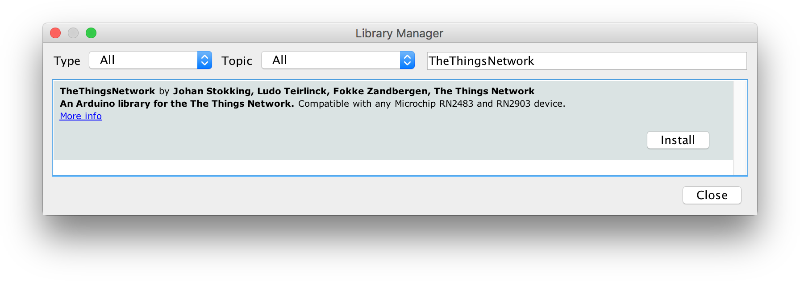
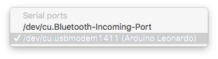
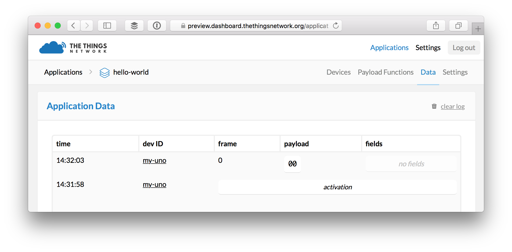
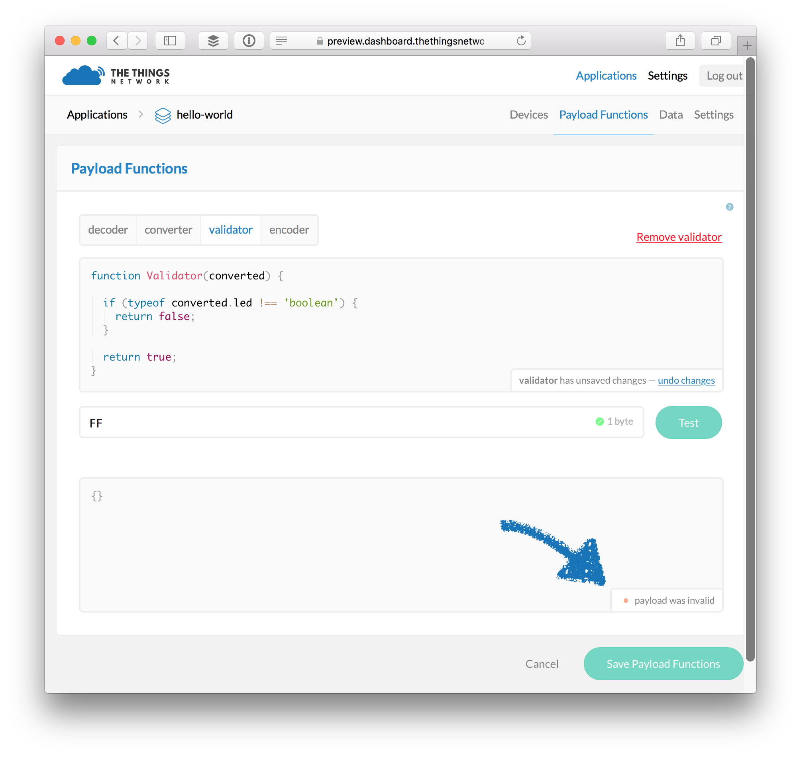
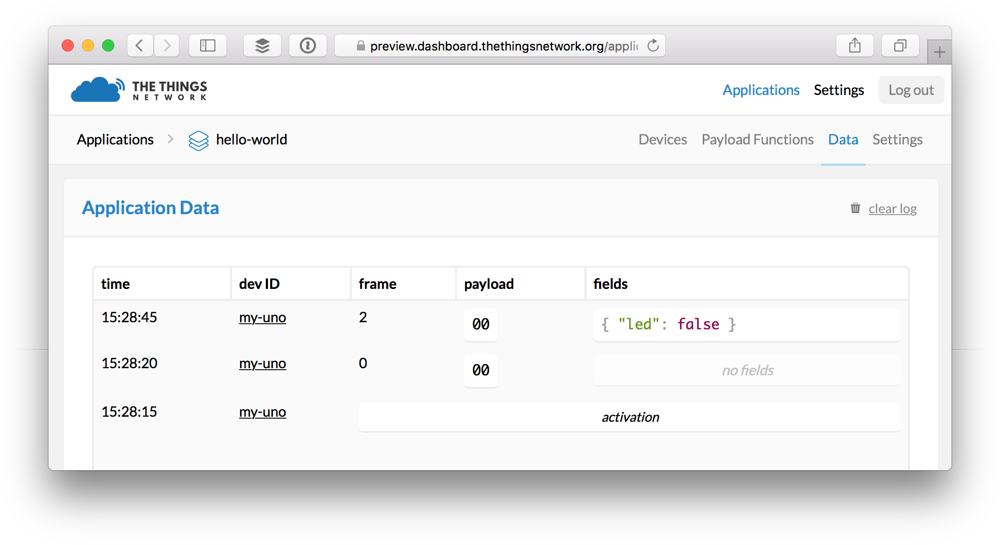
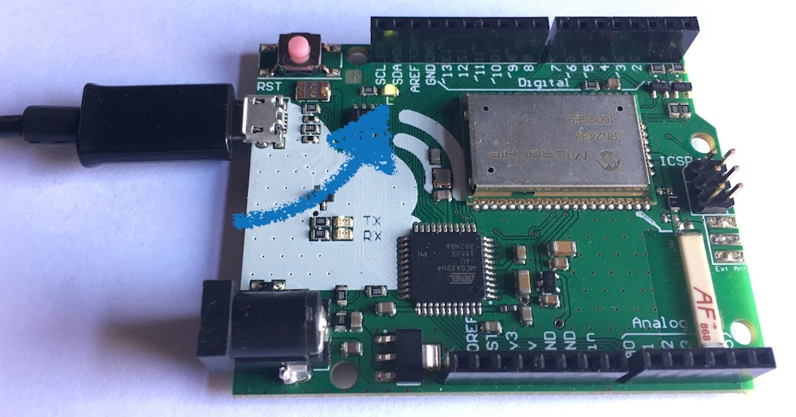
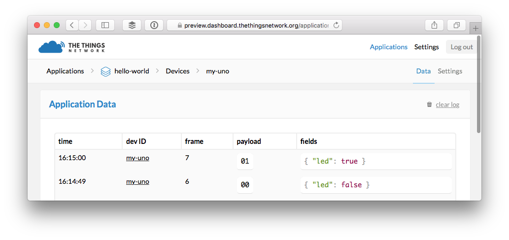

Quick Start
Outdated: this section documents The Things Network V2, which is no longer maintained. See the documentation for The Things Stack V3, or browse the V2 docs index.
This guide will walk you through programming The Things Uno to send and receive your first message via The Things Network. We’ll use the Hello, World! of Arduino: LED_BUILTIN. 💡
The full sketch of this Quick Start is also included in TheThingsNetwork library for the Arduino IDE. You can find it under File > Examples > TheThingsNetwork > QuickStart.
Setup Arduino IDE #
Let’s start by setting up the software we’ll need to program your device.
- Download and install the latest Arduino Software (IDE).
- Navigate to Sketch > Include Library > Manage Libraries….
- Search for TheThingsNetwork and click the result to select it.
- Click the Install button which should appear:

The Arduino IDE will notify you of updates for the IDE and library automagically. :open_mouth:
See the Arduino Guide for more details.
Connect your Device #
Next, connect your device to the IDE over USB.
-
Use the included Micro-USB cable to connect The Things Uno to an USB port of your computer.
-
In Arduino IDE select Tools > Board > Arduino Leonardo.
-
Navigate to Tools > Port and select the port that identifies as Arduino Leonardo.

If you don’t see a port that identifies as Arduino Leonardo make sure The Things Uno’s power LED is on and check the cable and USB port you have used. On Windows, you might need to install drivers. See Arduino Troubleshooting for more suggestions.
Create a Sketch #
Let’s program your device with a so-called sketch.
-
In the Arduino IDE, select File > New
Ctrl/⌘ N.This should get you the basic structure with
setup()andloop():void setup() { // put your setup code here, to run once: } void loop() { // put your main code here, to run repeatedly: } -
Select Sketch > Include Library > TheThingsNetwork.
This should prepend an
#includefor TheThingsNetwork library:#include <TheThingsNetwork.h> -
Let’s leave
loop()for what it is and replace all code above it with the following:#include <TheThingsNetwork.h> #define loraSerial Serial1 #define debugSerial Serial // Replace REPLACE_ME with TTN_FP_EU868 or TTN_FP_US915 #define freqPlan REPLACE_ME TheThingsNetwork ttn(loraSerial, debugSerial, freqPlan); void setup() { loraSerial.begin(57600); debugSerial.begin(9600); // Initialize LED output pin pinMode(LED_BUILTIN, OUTPUT); // Wait a maximum of 10s for Serial Monitor while (!debugSerial && millis() < 10000); debugSerial.println("-- STATUS"); ttn.showStatus(); }Replace
REPLACE_MEwithTTN_FP_EU868,TTN_FP_US915,TTN_FP_AU915orTTN_FP_IN865_867, depending on the frequency plan of your device and your country. (Click here for an overview of all frequency plans per country).This will do a few things:
-
Use
#defineto create more meaningful aliases for theSerialports for the LoRa modem and the USB connection, as well as the frequency plan. -
Create an instance
ttnof TheThingsNetwork class, passing the serial ports and the frequency plan. -
Call
begin()to set the data rate for both serial ports. -
Wait for the Arduino IDE’s Serial Monitor to open communication via USB, but no longer than 10 seconds (10.000ms).
This trick works because
if(Serial)will returntruewhen communication is open andmillis()will give us the time sincesetup()was called. -
Use
println()to log to the Serial Monitor and callttn.showStatus()to do the same, which will give us the information we need for our next step.
-
Get your Device EUI #
To communicate via The Things Network, you need to register your device. For this, we’ll need its unique Device EUI. This is a unique address, hard coded into the LoRa module. The ttn.showStatus() method we added in the previous step will get us this and other information about our device.
-
In the Arduino IDE, select Sketch > Upload
Ctrl/⌘ Uto upload the sketch.Uploads might fail if the Serial Monitor is open or if the IDE lost track of the port you selected. Close the monitor, check the port selection and try again. If it still fails, check Arduino Troubleshooting.
-
Within 10 seconds, select Tools > Serial Monitor
Ctrl/⌘ Shift Mto open the Serial Monitor.Soon, it should print a list of information:
-- STATUS EUI: 0004A30B001B7AD2 Battery: 3223 AppEUI: 70B3D57EF000001C DevEUI: 0004A30B001B7AD2 Band: 868 Data Rate: 5 RX Delay 1: 1000 RX Delay 2: 2000 Total airtime: 0.00 sUse the first
EUIvalue to register your device.
Next time you need the Device EUI of a device, simply select File > Examples > TheThingsNetwork > DeviceInfo, only set the frequency plan and upload this sketch which will call
ttn.showStatus()every 10 seconds.
🎉 You have connected your device, written your first sketch, uploaded it to your device and monitored your device logs to retrieve its Device EUI.
Create an Account #
To register your device you’ll need a The Things Network account.
-
Go to account.thethingsnetwork.org and click create an account.
You will receive an email to confirm your email address. You have 24 hours to do so, so let’s now wait for that and carry on! 🚀
You can change all but your username later via your Profile.
-
Select Console from the top menu.
-
From the top right menu, select your name and then Settings from the dropdown menu to change the default Handler if the one currently selected is not where you’ll be deploying most of your devices.
Add an Application #
Devices need to be registered with an application to communicate with. Let’s add one.
- On console.thethingsnetwork.org, click add application.
- For Application ID, choose a unique ID of lower case, alphanumeric characters and nonconsecutive
-and_. - For Description, enter anything you like.
- Leave the checkbox enabled to automatically register the application to your default region.

-
Click Add application to finish.
You will be redirected to the newly added application.
Register your Device #
You are now ready to register your device to the application.
-
On the application’s screen, scroll down to Devices or select Devices from the top right menu.
-
In the Devices box, click register device.
- For Device ID, choose a - for this application - unique ID of lower case, alphanumeric characters and nonconsecutive
-and_. - For Device EUI, copy-paste the DevEUI you retrieved from your device.
- Leave the App Key to be randomly generated.
- Leave the default App EUI selected.

- For Device ID, choose a - for this application - unique ID of lower case, alphanumeric characters and nonconsecutive
-
Click Register to finish.
You will be redirected to the newly registered device, where you can find the generated App Key which we’ll need next.
Activate your Device #
Now that we have registered the device, we can activate the connection from our device itself.
Activation means that the device will use the generated App Key to negotiate session keys for further communication. This is also known as Over The Air Activation or OTAA. There’s also Activation By Personalization (ABP) where you set or generate the session keys via the console and hard-code them on your device.
-
In the console, scroll down the device’s screen to Example Code and copy the keys:

-
Paste the keys right after the
#includeof your sketch. -
In the
setup()function, copy the following code just afterttn.showStatus():debugSerial.println("-- JOIN"); ttn.join(appEui, appKey); -
Select Sketch > Upload
Ctrl/⌘ Uto upload the sketch and then Tools > Serial MonitorCtrl/⌘ Shift Mto open the Serial Monitor.You should see something like:
-- STATUS EUI: 0004A30B001B7AD2 Battery: 3223 AppEUI: 70B3D57EF000001C DevEUI: 0004A30B001B7AD2 DevAddr: 260127C6 Data Rate: 5 RX Delay 1: 1000 RX Delay 2: 2000 Total airtime: 0.00 s -- JOIN Version is RN2483 1.0.1 Dec 15 2015 09:38:09, model is RN2483 ... Sending: mac set appeui with 8 bytes Sending: mac set deveui 0004A30B001B7AD2 Sending: mac set appkey with 16 bytes Sending: mac join otaa Join accepted. Status: 00000401 DevAddr: 26012E93
🎉 Your device is now activated and connected to The Things Network!
Message the application #
Let’s say hello! Most Arduino boards have an on-board LED and the constant LED_BUILTIN (scroll all the way down) will tell us which pin it is connected to. We are going send a message to tell us if it’s on or not. Exciting! 💡
-
In the Arduino IDE, go back to your sketch and replace the
loop()function with:void loop() { debugSerial.println("-- LOOP"); // Prepare array of 1 byte to indicate LED status byte data[1]; data[0] = (digitalRead(LED_BUILTIN) == HIGH) ? 1 : 0; // Send it off ttn.sendBytes(data, sizeof(data)); delay(10000); }This will do a few things:
-
Create an array of bytes to hold our message.
With LoRaWAN, airtime is expensive. The bigger the message, the more airtime it will cost. Encode any message you need to send in as little bytes as you can. See Working with Bytes to learn more.
-
Use
digitalReadto get the current value of the LED pin. This will be either constantsHIGHorLOW, which we translate to1and0. -
Call
ttn.sendBytes()to send the message. This takes the array itself as well as its length viasizeof().Can’t
sendBytes()figure out the length you’re asking? The short answer: no. For a longer answer, check Stack Overflow. -
Pause 10 seconds between loops.
-
-
Select Sketch > Upload
Ctrl/⌘ Uto upload the sketch and then Tools > Serial MonitorCtrl/⌘ Shift Mto open the Serial Monitor.You should see something like:
-- LOOP Sending: mac tx uncnf 1 with 1 bytes Successful transmission
Monitor & Decode Messages #
Let’s see the messages come in.
-
From the application’s screen in the console, select Data from the top right menu.
You should now see the messages come in:

What you see is the raw payload in hex-formatted, space-separated bytes. Let’s decode that to meaningful fields.
-
Select Payload Functions from the top right menu.
-
Leave decoder selected and copy-paste the following JavaScript code:
function Decoder(bytes, port) { // Decode an uplink message from a buffer // (array) of bytes to an object of fields. var decoded = {}; if (port === 1) decoded.led = bytes[0]; return decoded; } -
Use the input field and Test button to see how various payloads of hex-formatted, space-separated bytes are decoded by selecting the first byte (as number) for a field called
led:00becomes{ "led": 0 }01becomes{ "led": 1 }FFbecomes{ "led": 255 }01 02 03becomes{ "led": 1 }
-
Now select converter and copy-paste the following code:
function Converter(decoded, port) { // Merge, split or otherwise // mutate decoded fields. var converted = decoded; if (port === 1 && (converted.led === 0 || converted.led === 1)) { converted.led = Boolean(converted.led); } return converted; } -
Again, test with various bytes to how the decoded object gets converted to more meaningful values:
00becomes{ "led": false }01becomes{ "led": true }FFbecomes{ }01 02 03becomes{ "led": true }
-
Next, select validator and paste this code:
function Validator(converted, port) { // Return false if the decoded, converted // message is invalid and should be dropped. if (port === 1 && typeof converted.led !== 'boolean') { return false; } return true; } -
Run another round of tests to verify all payloads that don’t convert to have a boolean
ledproperty are marked invalid:
Invalid messages will be dropped and not published to services that have subscribed to this application’s messages.
-
Click Save Payload Functions to save all three in one go.
-
Select Data from the top right menu.
-
If your device is still sending data any (valid) new messages should now show their decoded and converted payload in the fields column:

🎉 You can now decode cryptic byte messages to meaningful payloads!
Would you like to learn how to receive and further process these messages? Head over to the MQTT guide!
Message your device #
Now let’s send a message to your device in return.
There are different classes of LoRa devices. Like most devices, The Things Uno and Node can only receive the single last message queued for them in response to a message they send themselves.
We’ll prepare your device to receive a message in response.
-
In the Arduino IDE, add the following line to
setup()function to let it know what function to call when a message comes in:// Set callback for incoming messages ttn.onMessage(message); -
Then copy paste the actual function to the end of the sketch:
void message(const byte* payload, int length, int port) { debugSerial.println("-- MESSAGE"); // Only handle messages of a single byte if (length != 1) { return; } if (payload[0] == 0) { debugSerial.println("LED: off"); digitalWrite(LED_BUILTIN, LOW); } else if (payload[0] == 1) { debugSerial.println("LED: on"); digitalWrite(LED_BUILTIN, HIGH); } }The function will use
digitalWrite()to turn the LED on or off, based on the single byte message we receive. -
Select Sketch > Upload
Ctrl/⌘ Uto upload the sketch and then Tools > Serial MonitorCtrl/⌘ Shift Mto open the serial monitor. -
In the console, navigate to your application, Devices and select your device.
-
With the serial monitor still open, enter
01in the input field of the Downlink box and click Send.The next time your device sends a message it should display something like:
-- LOOP Sending: mac tx uncnf 1 with 1 bytes Successful transmission. Received 1 bytes LED: onAnd… there was light! 💡

Note: The LED is labelled
13next to the power supply, in the image above. -
From the device screen, select Data from the top right menu and you should see that the next message the device sends indeed confirms the LED is now on:

-
As a bonus, try sending
00to turn of the LED and verify that the next message confirms it.
🎉 Congrats! You just closed the circle and can communicate via The Things Network in both ways.
Encode Messages #
What would be cooler than turning a LED on by sending 00? Sending { "led": true } of course! Just like we decode message on arrival on The Things Network we can also encode messages to devices before they will be delivered.
-
In the console, navigate to the application and select Payload Functions from the top right menu.
-
Select encoder and use the following code:
function Encoder(object, port) { // Encode downlink messages sent as // object to an array or buffer of bytes. var bytes = []; if (port === 1) bytes[0] = object.led ? 1 : 0; return bytes; } -
Use the input field and Test button to see how various JSON encoded payloads will be encoded as displayed in hex-formatted, space-separated bytes:
{ "led": false }becomes00{ "led": true }becomes01{ "foo": "bar" }becomes
There is no separate converter and validator function for this direction. Return an empty array to drop the message.
-
Click Save Payload Functions.
-
Select Devices from the top right menu and select your device.
-
With the serial monitor still open, select fields in the Downlink box, enter
{ "led": true }in the input field and click Send.You should now see the LED turn on again and be able to verify in the logs and console data monitor. Don’t forget to try
trueas well, you never know! 😉
🙌 You have now completed the Quick Start and are able to send messages, decode, convert and validate them and respond with encoded messages. Go build something!
What’s next? #
Next, you’ll want to:
-
Learn how to receive and send messages from anywhere using MQTT or our Node-RED or Node.js library.
-
Learn how to add sensors and actuators to your device to harvest data and trigger actions anywhere, thanks to the long range, low power The Things Network.
Let The Things Lab inspire you!
We’ll have a guide on encoding and decoding sensor and actuator data for efficient communication soon.